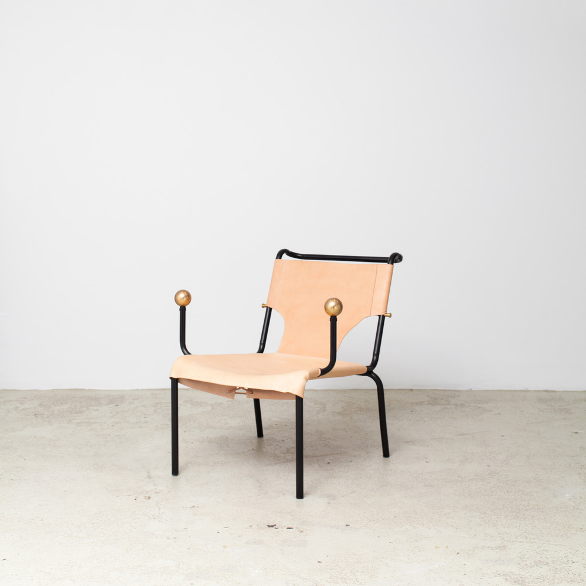
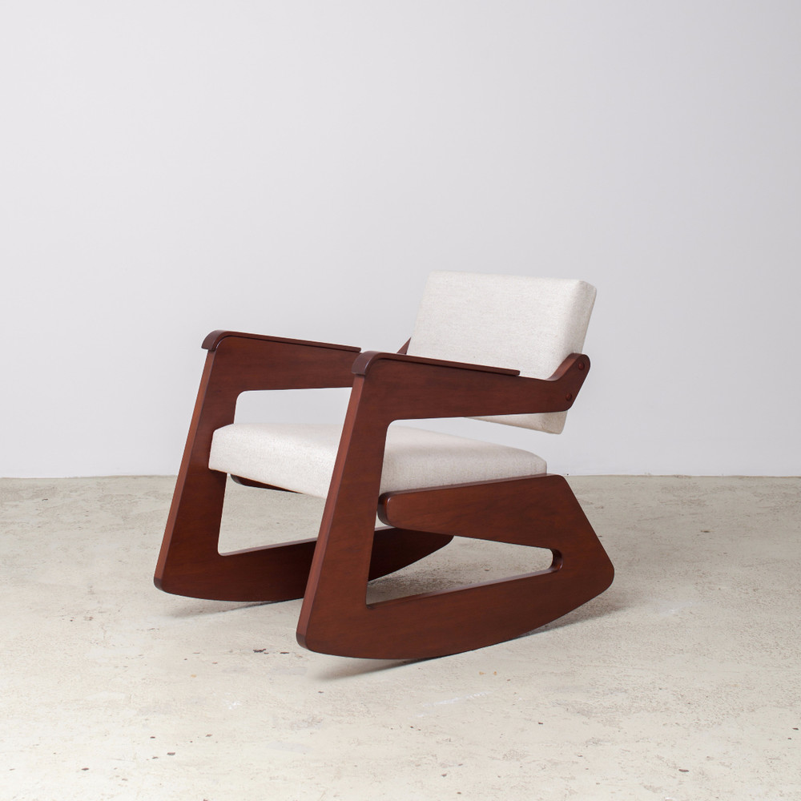
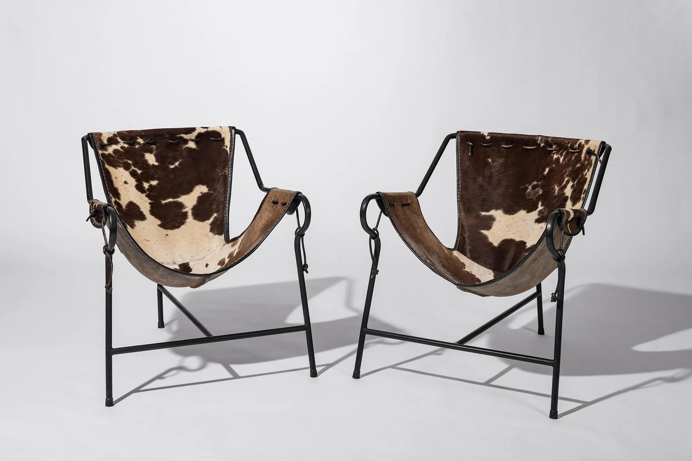
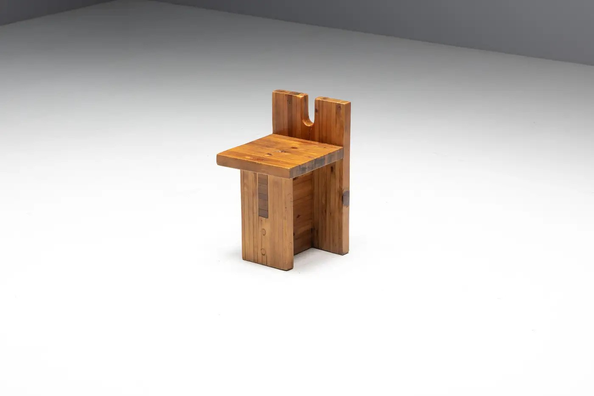
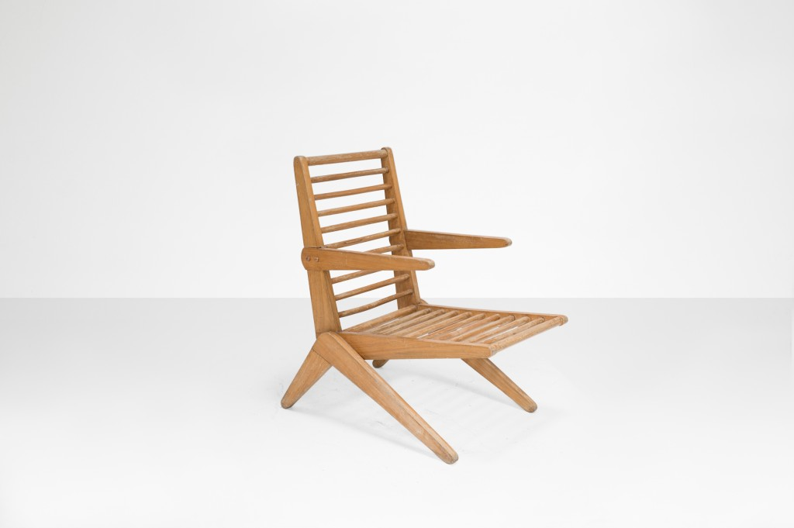
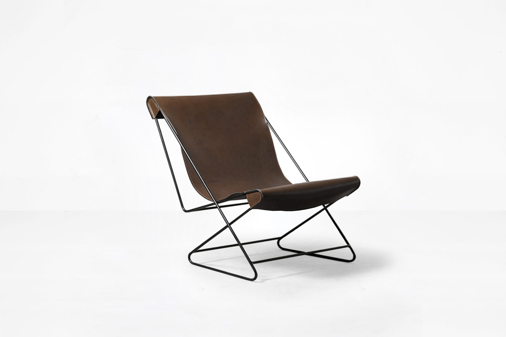
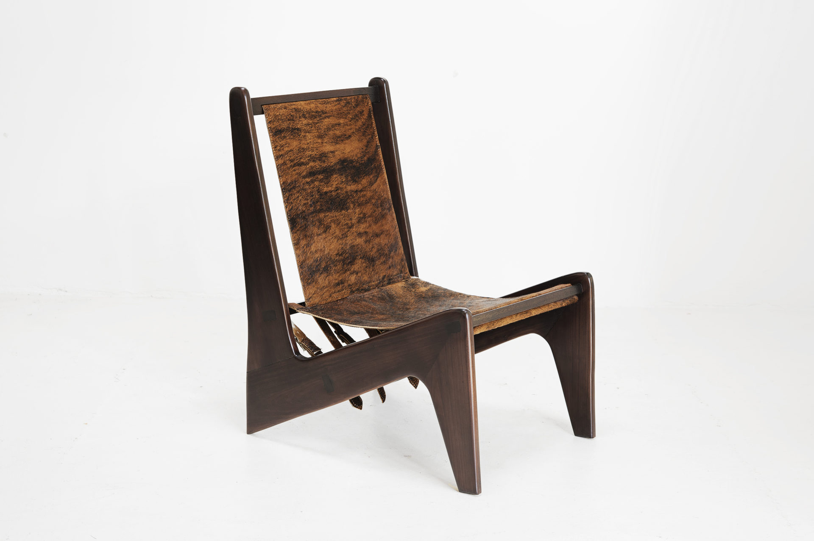
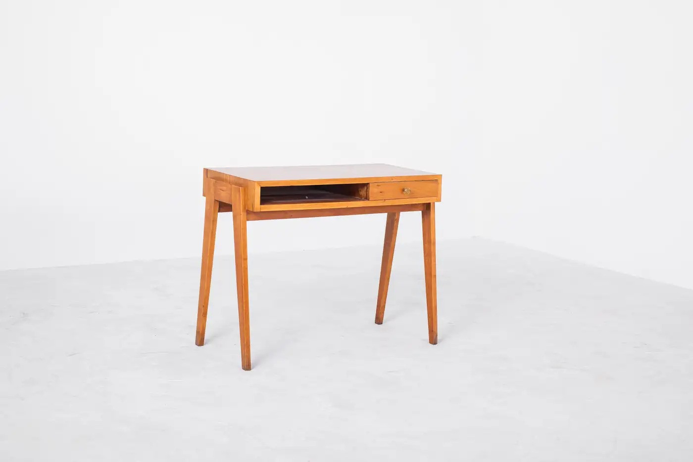
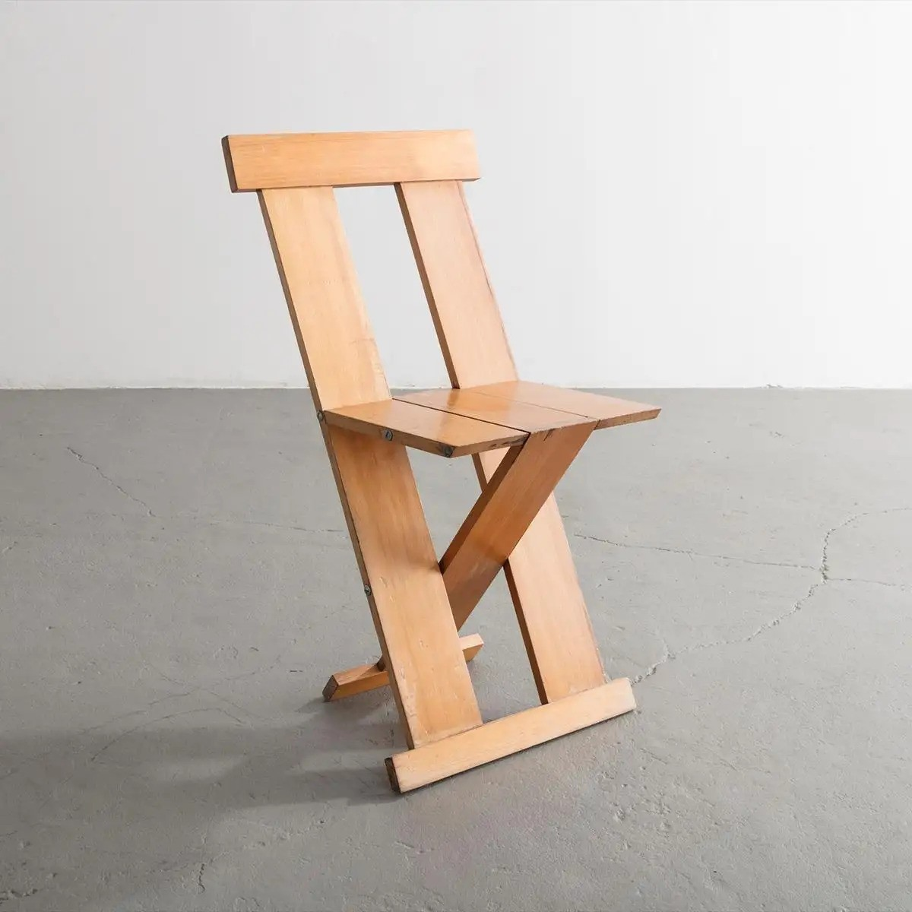
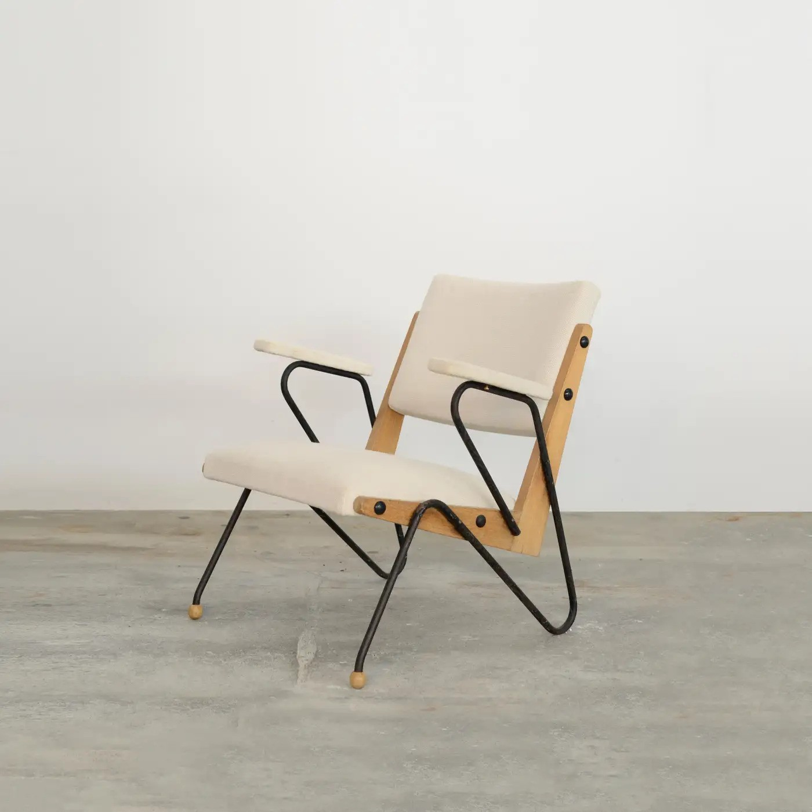

FURNITURE
Most of Bo Bardi’s work revolved in furniture and jewelry design, which were completely inspired in Avant-Garde Modernism. Bardi’s work in essential and admired in Brazilian Architecture and culture.

Bola de Latão Lounge Armchair, 1951

Balanço Lounge Armchair, 1948

Tripod Chairs, 1948

Chair model "SESC", 1980

Pool Lounge Chair, 1949

1958

ZIG ZAG Chair, 1949

Dressing Desk, 1948

Frei Egydio, 1986

1950